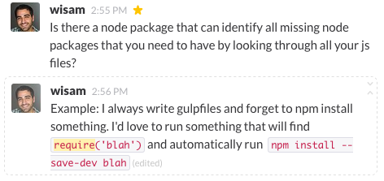
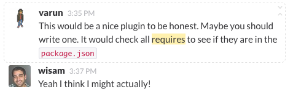
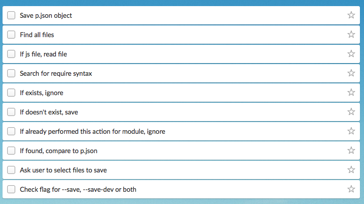
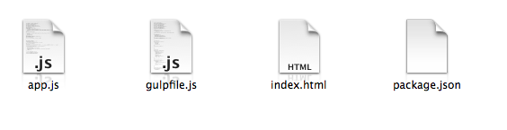

Side Project Story: theia
Node & npm
- Package.json
- Local node_modules
- Global node_modules
Sample Package.json
{
"name": "gulp",
"description": "The streaming build system",
"version": "3.8.11",
"homepage": "http://gulpjs.com",
"repository": "gulpjs/gulp",
"author": "Fractal (http://wearefractal.com/)",
"tags": [
"build",
"stream",
"system",
"make",
"tool",
"asset",
"pipeline"
],
"files": [
"index.js",
"lib",
"bin",
"completion"
],
"bin": {
"gulp": "./bin/gulp.js"
},
"man": "gulp.1",
"dependencies": {
"archy": "^1.0.0",
"chalk": "^1.0.0",
"deprecated": "^0.0.1",
"gulp-util": "^3.0.0",
"interpret": "^0.5.0",
"liftoff": "^2.0.1",
"minimist": "^1.1.0",
"orchestrator": "^0.3.0",
"pretty-hrtime": "^1.0.0",
"semver": "^4.1.0",
"tildify": "^1.0.0",
"v8flags": "^2.0.2",
"vinyl-fs": "^0.3.0"
},
"devDependencies": {
"coveralls": "^2.7.0",
"graceful-fs": "^3.0.0",
"istanbul": "^0.3.0",
"jscs": "~1.11.3",
"jshint": "^2.5.0",
"jshint-stylish": "^1.0.0",
"marked-man": "^0.1.3",
"mkdirp": "^0.5.0",
"mocha": "^2.0.1",
"mocha-lcov-reporter": "^0.0.1",
"q": "^1.0.0",
"rimraf": "^2.2.5",
"should": "^5.0.1"
},
"scripts": {
"prepublish": "marked-man --name gulp docs/CLI.md > gulp.1",
"lint": "jshint lib bin test index.js --reporter node_modules/jshint-stylish/stylish.js --exclude node_modules && jscs lib bin test index.js",
"test": "npm run-script lint && mocha --reporter spec",
"coveralls": "istanbul cover _mocha --report lcovonly -- -R spec && cat ./coverage/lcov.info | coveralls && rm -rf ./coverage"
},
"engines": {
"node": ">= 0.9"
},
"license": "MIT"
}
Sample Code
var archy = require('archy');
var coveralls = require('coveralls');
npm install --save archy
npm install --save-dev coveralls
Idea
 Simple Game Plan
 More Elaborate Game Plan
- Functional Programming
- Good Project & File Structure
- Unit tests & Continuous Integration Tool
- Publish to npm
- Promises across the board
- No shortcuts (within reason)
Functional Programming
- Abstract data into functions
- Instead of using loops, use .map, .reduce, .filter
- Create reusable pure functions
Good Project & File Structure
Unit tests & Continuous Integration
Using CircleCI, build passes if:
- Code is well-formatted (beautifier)
- Code is linted (Eslint)
- Code passes Mocha Unit Tests (its not broken)
Promises only
Using Library q.
No shortcuts (within reason)
Publish to NPM
Coincidentally: 1 commit a day
Agile

Refactor often, as you go.
"3 steps forward, 1 step back"
Commit historyNew features vs necessary improvements
- ES6
- Front-end component
- Detect & display line numbers
- Detect & display multiple requires
- Detect and allow users to add version number
- More powerful promise library?
- --save-dev --save choose option
- Avoid node_modules directory
- Revealing Module Pattern
- Avoid all .gitignore files
Staying Motivated
Why Am I Doing This Again?
Know when it's time to say goodbye (for now)
npm Publish
Demo
The Process I followed And Recommend:
- Simple plan with a goal + exit strategy
- Add more 'sub-goals'
- Grow incrementally
- Way to define and measure success - commit a day
- Handled Scope Creep
- Understand it's a rocky road
- Handled pessimism/negativity by reminding yourself why you are doing this
- Know when to say goodbye